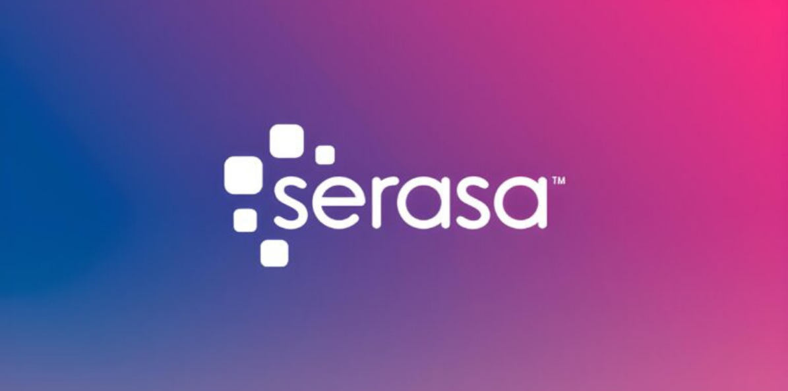

Existem formas de aumentar o Score?
Antes de responder essa pergunta, vamos relembrar o que é o score.
A Serasa Score 2.0 é uma pontuação que varia entre 0 a 1000 pontos e serve para classificar a probabilidade de inadimplência de pessoas e empresas. Para as empresas, esse indicador também é conhecido como “rating”.
A classificação é feita da seguinte forma:
0 a 300 pontos: Muito Alta
301 a 500: Alta
501 a 700: Baixa
701 a 1000: Muito Baixa
Portanto, se o seu score estiver acima de 500 pontos, você já é considerado um risco baixo de inadimplência, e estará apto a conseguir crédito com mais facilidade no mercado. Abaixo disso, você já é considerado um risco alto e com certeza você terá problemas para conseguir a aprovação do seu crédito. Apesar de ser um indicador mais utilizado por instituições financeiras, ele também está sendo amplamente utilizado no comércio para compras a prazo.
Como a Serasa chega na pontuação do meu score?
A pontuação é feita de forma automática por meio de um algoritmo mais conhecido como “robô”, que leva em consideração os pesos dos seus comportamentos financeiros.
Segue abaixo como estão divididos esses pesos:
Os seus pagamentos de crédito representam 43,6% do seu score;
As consultas realizadas para serviço de crédito representam 19,3% do seu score;
O seu histórico de pagamento de dívidas representa 19,1% do seu score;
Os seus créditos contratados e o tempo de uso desses créditos representam 18% do seu score.
Agora sim, vamos falar sobre as maneiras de aumentar o seu score. Ele pode ser feito de forma orgânica, levando em consideração os seus comportamentos financeiros, e de forma jurídica através da Afirmativa Brasil, onde você ou a sua empresa terá um score mínimo de 600 pontos.
Forma Orgânica:
Primeiramente, é preciso reforçar o conceito de que o score leva em consideração uma série de comportamentos financeiros.
Se atrasamos o pagamento de uma dívida de crédito, por exemplo, esse comportamento negativo irá abaixar o score significativamente, pois conforme vimos, o peso do pagamento de créditos representa 43,6% de todo o nosso score. E o contrário também é verdadeiro quando pagamos as nossas dívidas de crédito dentro do vencimento, ou seja, o nosso score aumenta consideravelmente.
Como alavancar o seu score nesse item? Contrate pequenos empréstimos, aqueles aos quais você conseguirá pagar dentro do prazo de vencimento e antecipe o pagamento para abater os juros. Considere também contratar algum serviço do seu banco, como por exemplo, algum tipo de seguro.
E o que significa as consultas realizadas para serviço de crédito que representa 19,3% do meu score?
Toda vez que você pede crédito no mercado o seu nome na Serasa é consultado para checar se existem restrições. Toda vez que você é consultado, o mercado avalia que você está precisando de dinheiro emprestado. Se essa consulta for feita diversas vezes em um curto espaço de tempo, o mercado irá avaliar que você está desesperadamente precisando de dinheiro, e isso não é um bom indicador. Como consequência, o seu score é rebaixado.
Como alavancar o seu score nesse item? A única solução aqui é não ser consultado muitas vezes em um curto período de tempo. Mas fique atento, pois o importante aqui é a quantidade de consultas realizadas e não a quantidade de empresas que você tentou conseguir o crédito. Exemplo: Se você for financiar um veículo, normalmente as concessionarias consultam diversas financeiras para aprovar a sua compra, e todas essas empresas financeiras irão consultar a Serasa. Se essa concessionária tentou aprovar o seu crédito com 10 financeiras diferentes, você terá 10 consultas quase que simultâneas sendo realizadas por 10 instituições diferentes, e isso informa para o mercado que você está desesperado para conseguir esse crédito, e consequentemente o seu score irá cair.
Quer saber mais sobre como aumentar o seu score de forma orgânica? Adquirindo o nosso programa de reabilitação de crédito, você terá acesso gratuito a vídeo aulas sobre como turbinar o seu score. As vídeo aulas estão disponíveis na área do cliente dentro do nosso site.
Forma Jurídica:
Da mesma forma que é possível via processo jurídico retirar as restrições nos órgãos de proteção ao crédito antes mesmo de pagar as dívidas, também é possível aumentar o score de forma jurídica com garantia mínima de 600 pontos na Afirmativa Brasil. O processo jurídico é 100% legal e sigiloso para os nossos clientes, onde é utilizado o Código de Defesa do Consumidor como amparo jurídico. Porém, para que possamos ter êxito no processo, é obrigatório que o nome da empresa ou da pessoa esteja livre de restrições nos órgãos de proteção ao crédito. Se você estiver com o seu nome negativado, entre em contato conosco e contrate o nosso combo “Programa de Reabilitação de Crédito” + “Aumento do Score de forma judicial”.
E então, qual você achou a melhor opção? Seja qual for ela, nós podemos te ajudar! Fale com um de nossos consultores e reative a sua vida financeira.